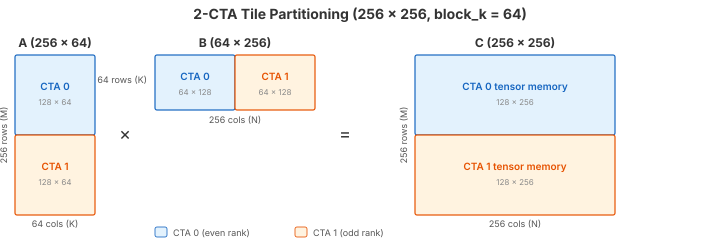
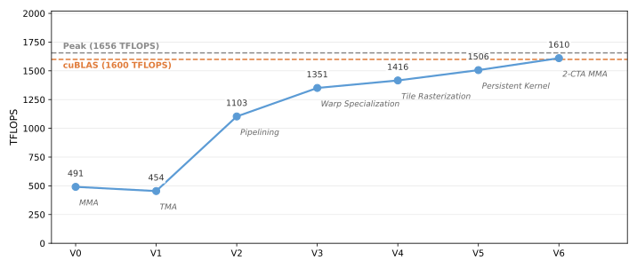

6. 2-CTA Cluster¶
V5 is a persistent kernel with a pipelined epilogue, but each CTA works alone — it loads the full A and B tiles into its own shared memory, and its tensor core computes the full output tile.
To push performance further, we want larger tiles: a bigger output tile means more compute per tile, better amortization of pipeline overhead, and higher tensor core utilization. But shared memory per SM is limited — we cannot simply double the tile size and expect the data to fit.
Blackwell solves this with 2-CTA clusters: two CTAs on adjacent SMs cooperate on a single larger output tile. Each CTA loads only half of the input data into its own shared memory, and the tensor core hardware reads from both CTAs’ shared memory via distributed shared memory (DSMEM). The result: double the tile size with the same shared memory budget per SM.
In V6, the output tile grows from 128 × 256 to 256 × 256, and the kernel
uses self.attrs.cluster_blocks=2. This tutorial explains how the data is partitioned,
how the 2-CTA MMA instruction works, and what changes in the kernel code.
The Full Kernel¶
class Pipeline(tilus.Class): # same as V4/V5
def __init__(
self,
num_stages: int,
producer_arrive_count: int = 1,
consumer_arrive_count: int = 1,
):
self.num_stages: int = num_stages
self.empty_barriers = self.mbarrier.alloc(
[consumer_arrive_count for _ in range(num_stages)]
)
self.full_barriers = self.mbarrier.alloc(
[producer_arrive_count for _ in range(num_stages)]
)
self.producer_stage: int32 = 0
self.consumer_stage: int32 = 0
self.producer_phase: uint32 = self.mbarrier.producer_initial_phase
self.consumer_phase: uint32 = self.mbarrier.consumer_initial_phase
def producer_acquire(self):
self.mbarrier.wait(
barrier=self.empty_barriers[self.producer_stage],
phase=self.producer_phase,
sem="relaxed",
scope="cta",
)
def producer_barrier(self) -> RegisterTensor:
return self.full_barriers[self.producer_stage]
def producer_advance(self):
self.producer_stage = (self.producer_stage + 1) % self.num_stages
self.producer_phase = self.producer_phase ^ (self.producer_stage == 0)
def consumer_acquire(self):
self.mbarrier.wait(
barrier=self.full_barriers[self.consumer_stage],
phase=self.consumer_phase,
sem="relaxed",
scope="cta",
)
def consumer_barrier(self) -> RegisterTensor:
return self.empty_barriers[self.consumer_stage]
def consumer_advance(self):
self.consumer_stage = (self.consumer_stage + 1) % self.num_stages
self.consumer_phase = self.consumer_phase ^ (self.consumer_stage == 0)
@tilus.autotune("block_m", [256])
@tilus.autotune("block_n, e_block_n", [[256, 16], [256, 32]])
@tilus.autotune("block_k", [64])
@tilus.autotune("tma_stages", [5, 6])
@tilus.autotune("mma_stages", [2])
@tilus.autotune("swizzle_size", [4, 8, 16])
class BlackwellMatmulV6(tilus.Script):
def __init__(
self,
block_m: int,
block_n: int,
block_k: int,
tma_stages: int,
mma_stages: int,
e_block_n: int,
swizzle_size: int,
):
super().__init__()
self.block_m = block_m
self.block_n = block_n
self.block_k = block_k
self.e_block_n = e_block_n
self.tma_stages = tma_stages
self.mma_stages = mma_stages
self.swizzle_size = swizzle_size
self.clc_stages = 1
def compute_block_coord(
self, linear_idx: int32, num_m_blocks: int32, num_n_blocks: int
):
swizzle_size = self.swizzle_size
tiles_per_group = num_m_blocks * swizzle_size
group_idx, in_group_idx = self.fast_divmod(linear_idx, tiles_per_group)
first_n = group_idx * swizzle_size
m_block: int32 = 0
n_block: int32 = 0
remainder = num_n_blocks - num_n_blocks // swizzle_size * swizzle_size
last_group_width = remainder if remainder > 0 else swizzle_size
if first_n + swizzle_size <= num_n_blocks:
m_block, r = self.fast_divmod(in_group_idx, swizzle_size)
n_block = first_n + r
else:
m_block, r = self.fast_divmod(in_group_idx, last_group_width)
n_block = first_n + r
return m_block, n_block
def query_clc_response(self, s_clc_response: SharedTensor, pipe: Pipeline):
"""Consume the CLC response: read the next tile assignment from shared memory."""
pipe.consumer_acquire()
response = s_clc_response[pipe.consumer_stage]
is_valid, new_blockIdx = self.clc.query_response(response)
# arrive on CTA 0's barrier remotely (cluster-scoped)
self.mbarrier.arrive_and_expect_tx_remote(
pipe.consumer_barrier(),
transaction_bytes=0,
target_rank=0,
sem="relaxed",
scope="cluster",
)
pipe.consumer_advance()
return is_valid, new_blockIdx
def __call__(
self,
m_size: int32,
n_size: int,
k_size: int,
a_ptr: ~float16,
b_ptr: ~float16,
c_ptr: ~float16,
):
block_m = self.block_m
block_n = self.block_n
block_k = self.block_k
e_block_n = self.e_block_n
tma_stages = self.tma_stages
mma_stages = self.mma_stages
clc_stages = self.clc_stages
num_m_blocks = cdiv(m_size, block_m)
num_n_blocks = cdiv(n_size, block_n)
# 2-CTA cluster: two CTAs cooperate on each output tile
self.attrs.blocks = num_m_blocks * num_n_blocks * 2, 1
self.attrs.cluster_blocks = 2
self.attrs.warps = 8
g_a = self.global_view(a_ptr, dtype=float16, shape=[m_size, k_size])
g_b = self.global_view(b_ptr, dtype=float16, shape=[n_size, k_size])
g_c = self.global_view(c_ptr, dtype=float16, shape=[m_size, n_size])
# each CTA holds half: CTA 0 loads top rows of A, CTA 1 loads bottom rows
s_a = self.shared_tensor(dtype=float16, shape=[tma_stages, block_m // 2, block_k])
s_b = self.shared_tensor(dtype=float16, shape=[tma_stages, block_n // 2, block_k])
# cta_group=2: distributed MMA reads shared memory from both CTAs
t_acc = self.tcgen05.alloc(
dtype=float32, shape=[mma_stages, block_m // 2, block_n], cta_group=2
)
s_clc_response = self.shared_tensor(dtype=int32, shape=[clc_stages, 4])
tma_pipe = Pipeline(tma_stages)
mma_pipe = Pipeline(mma_stages, consumer_arrive_count=128)
# 7 warps × 32 threads × 2 CTAs = 448: both CTAs' warps consume CLC responses
clc_pipe = Pipeline(clc_stages, consumer_arrive_count=224 * 2)
# each CTA's rank (0 or 1) within the 2-CTA cluster
cta_rank = self.cluster.blockRank
self.cluster.sync()
with self.single_warp(0): # tma worker (gmem -> smem)
m_block_0, n_block_0 = self.compute_block_coord(
self.blockIdx.x // 2, num_m_blocks, num_n_blocks
)
offset_m_a = (m_block_0 * 2 + cta_rank) * (block_m // 2)
offset_n_b = n_block_0 * block_n + cta_rank * (block_n // 2)
while True:
for offset_k in range(0, k_size, block_k):
tma_pipe.producer_acquire()
mbarrier = tma_pipe.producer_barrier()
if cta_rank == 0:
with self.single_thread():
transaction_bytes = (s_a[0].nbytes + s_b[0].nbytes) * 2
self.mbarrier.arrive_and_expect_tx(
mbarrier, transaction_bytes
)
else:
# CTA 1 maps to CTA 0's barrier (shared across cluster)
mbarrier = self.cluster.map_shared_addr(mbarrier, target_rank=0)
self.tma.global_to_shared(
src=g_a,
dst=s_a[tma_pipe.producer_stage],
offsets=[offset_m_a, offset_k],
mbarrier=mbarrier,
cta_group=2,
)
self.tma.global_to_shared(
src=g_b,
dst=s_b[tma_pipe.producer_stage],
offsets=[offset_n_b, offset_k],
mbarrier=mbarrier,
cta_group=2,
)
tma_pipe.producer_advance()
is_valid, new_blockIdx = self.query_clc_response(s_clc_response, clc_pipe)
if not is_valid:
break
m_block_0, n_block_0 = self.compute_block_coord(
new_blockIdx.x // 2, num_m_blocks, num_n_blocks
)
offset_m_a = (m_block_0 * 2 + cta_rank) * (block_m // 2)
offset_n_b = n_block_0 * block_n + cta_rank * (block_n // 2)
with self.single_warp(1): # mma worker (smem -> tmem)
while True:
if cta_rank == 0: # only CTA 0 issues MMA (reads both CTAs' smem)
mma_pipe.producer_acquire()
for offset_k in range(0, k_size, block_k):
tma_pipe.consumer_acquire()
self.tcgen05.mma(
s_a[tma_pipe.consumer_stage],
s_b[tma_pipe.consumer_stage].transpose(),
t_acc[mma_pipe.producer_stage],
enable_input_d=offset_k != 0,
cta_group=2,
)
# multicast commit: signal tma_pipe barriers on both CTAs
self.tcgen05.commit(
mbarrier=tma_pipe.consumer_barrier(),
cta_group=2,
multicast_mask=0b11,
)
tma_pipe.consumer_advance()
self.tcgen05.commit(
mbarrier=mma_pipe.producer_barrier(),
cta_group=2,
multicast_mask=0b11,
)
mma_pipe.producer_advance()
is_valid, new_blockIdx = self.query_clc_response(s_clc_response, clc_pipe)
if not is_valid:
break
with self.single_warp(2): # scheduler
while True:
if cta_rank == 0: # only CTA 0 runs the scheduler
clc_pipe.producer_acquire()
# multicast: CLC response delivered to both CTAs' shared memory
self.mbarrier.arrive_and_expect_tx_multicast(
clc_pipe.producer_barrier(),
transaction_bytes=16,
multicast_mask=0b11,
sem="relaxed",
scope="cluster",
)
self.clc.try_cancel(
s_clc_response[clc_pipe.producer_stage],
mbarrier=clc_pipe.producer_barrier(),
multicast=True,
)
clc_pipe.producer_advance()
is_valid, new_blockIdx = self.query_clc_response(s_clc_response, clc_pipe)
if not is_valid:
break
with self.warp_group(warp_begin=4, num_warps=4): # epilogue (tmem -> gmem)
s_c = self.shared_tensor(dtype=float16, shape=[block_m // 2, e_block_n])
m_block_e, n_block_e = self.compute_block_coord(
self.blockIdx.x // 2, num_m_blocks, num_n_blocks
)
offset_m_c = (m_block_e * 2 + cta_rank) * (block_m // 2)
offset_n_c = n_block_e * block_n
while True:
mma_pipe.consumer_acquire()
for e_offset_n in range(0, block_n, e_block_n):
t_acc_slice = self.tcgen05.slice(
t_acc[mma_pipe.consumer_stage],
offsets=[0, e_offset_n],
shape=[block_m // 2, e_block_n],
dims=[0, 1],
)
r_acc = self.tcgen05.load(t_acc_slice)
self.tcgen05.wait_load()
self.store_shared(s_c, r_acc.to(float16))
self.fence.proxy_async(space="shared")
self.sync()
with self.single_warp():
self.tma.shared_to_global(
s_c,
g_c,
offsets=[offset_m_c, offset_n_c + e_offset_n],
dims=[0, 1],
)
self.tma.commit_group()
self.tma.wait_group(n=0, read=True)
self.sync()
self.mbarrier.arrive(mma_pipe.consumer_barrier())
mma_pipe.consumer_advance()
is_valid, new_blockIdx = self.query_clc_response(s_clc_response, clc_pipe)
if not is_valid:
break
m_block_e, n_block_e = self.compute_block_coord(
new_blockIdx.x // 2, num_m_blocks, num_n_blocks
)
offset_m_c = (m_block_e * 2 + cta_rank) * (block_m // 2)
offset_n_c = n_block_e * block_n
# all allocated tensor memory must be deallocated
self.cluster.sync()
self.tcgen05.dealloc(t_acc)
What Changed from V5¶
V5 |
V6 |
|
|---|---|---|
Cluster size |
1 CTA |
2-CTA cluster ( |
Tile size |
128 × 256 |
256 × 256 (doubled M) |
Shared memory per CTA |
Full tile: |
Half tile: |
MMA |
|
|
Who issues MMA |
MMA warp on every CTA |
MMA warp on CTA 0 only |
CLC |
|
|
Barrier scope |
CTA-local |
Cluster-scoped: |
New instructions |
|
Tile Partitioning¶
The cluster computes a 256 × 256 output tile (block_m × block_n). Note
that these dimensions are the cluster-level tile size; each CTA is responsible
for only half. The three matrices are partitioned as follows:
A (256 × K): split by rows. CTA 0 loads the top 128 rows, CTA 1 loads the bottom 128 rows. Each CTA stores its half in local shared memory.
B (K × 256): split by columns. CTA 0 loads the left 128 columns, CTA 1 loads the right 128 columns. Each CTA stores its half in local shared memory.
C (256 × 256): split by rows (same as A). CTA 0 owns rows 0–127 in its tensor memory, CTA 1 owns rows 128–255.
{kind=link}

Data partitioning for a 256 × 256 output tile with block_k=64.
Each CTA holds half of A (by rows) and half of B (by columns) in shared
memory.¶
The key insight is the B sharing. To compute C = A × B, every row of A
must be multiplied against the full B tile. In a single-CTA kernel, each CTA
would need all of B in its shared memory. With a 2-CTA cluster, the tensor core
on each SM reads its local half of B and receives the other half from the peer
SM via Distributed Shared Memory (DSMEM).
DSMEM is a Blackwell hardware feature that allows one SM to directly read another SM’s shared memory within a cluster, without going through global memory. The hardware manages the cross-SM data transfer transparently — from the tensor core’s perspective, it simply reads B from two shared memory addresses, one local and one remote.
Each CTA only needs to load and store half of B in shared memory, yet both CTAs compute against the full B tile. This effectively halves the shared memory bandwidth pressure for B.
How does the hardware know to read B from both CTAs? That is what
cta_group=2 tells the MMA instruction.
2-CTA MMA (cta_group=2)¶
In V5, each CTA independently allocates tensor memory and issues MMA
instructions against its own shared memory. In V6, passing cta_group=2
tells the tensor core to operate across both CTAs in the cluster:
# Allocation: cta_group=2 is required when MMA uses cta_group=2
t_acc = self.tcgen05.alloc(
dtype=float32, shape=[mma_stages, block_m // 2, block_n], cta_group=2
)
# MMA: the CTA pair collaborates on this MMA when cta_group=2
self.tcgen05.mma(s_a[stage], s_b[stage].transpose(), t_acc[stage],
enable_input_d=..., cta_group=2)
With cta_group=2:
tcgen05.alloc()allocates tensor memory on each CTA locally. Thecta_group=2flag is required when the accumulator will be used with 2-CTA MMA.tcgen05.mma()is issued by a single warp from either CTA in the pair. The tensor core reads both A and B distributed across both CTAs’ shared memory (via DSMEM), and writes results to both CTAs’ tensor memory. In this kernel, we choose CTA 0 as the issuer.tcgen05.commit()withcta_group=2andmulticast_mask=0b11signals barriers on both CTAs when the MMA completes.
Because only CTA 0 issues MMA, CTA 1’s MMA warp is idle during the K-loop and
only participates in consuming CLC responses. With cta_group=2, a single
warp from either CTA issues the MMA instruction, and the tensor core reads both
A and B distributed across both CTAs’ shared memory. The single MMA produces
results for both CTAs’ tensor memory.
With two CTAs sharing the same pipeline, barrier operations can no longer be CTA-local — they need cluster scope.
Cluster Barrier Management¶
The main changes from V5:
TMA barriers: CTA 0 owns the tma_pipe barriers. CTA 1 needs to arrive
on the same barrier so that CTA 0 knows when both CTAs’ TMA loads have
completed. To do this, CTA 1 translates CTA 0’s barrier address into a
cluster-visible address using
cluster.map_shared_addr().
This instruction takes a local shared memory address and returns the equivalent
address on another CTA’s SM, allowing cross-CTA barrier operations:
mbarrier = tma_pipe.producer_barrier()
if cta_rank == 0:
with self.single_thread():
transaction_bytes = (s_a[0].nbytes + s_b[0].nbytes) * 2
self.mbarrier.arrive_and_expect_tx(
mbarrier, transaction_bytes
)
else:
# CTA 1 maps to CTA 0's barrier (shared across cluster)
mbarrier = self.cluster.map_shared_addr(mbarrier, target_rank=0)
self.tma.global_to_shared(
src=g_a,
dst=s_a[tma_pipe.producer_stage],
offsets=[offset_m_a, offset_k],
mbarrier=mbarrier,
cta_group=2,
CTA 0 declares the expected bytes via
arrive_and_expect_tx()
(both CTAs’ loads combined: (s_a.nbytes + s_b.nbytes) * 2). CTA 1 maps the
barrier address to CTA 0’s shared memory, so both CTAs’
tma.global_to_shared()
loads signal the same barrier.
CLC barriers: the scheduler only runs on CTA 0. It uses
arrive_and_expect_tx_multicast()
to declare expected bytes on the barriers at the same local shared memory offset
across both CTAs simultaneously — more efficient than arriving on each CTA’s
barrier separately. The CLC response is multicast to both CTAs via
clc.try_cancel(multicast=True),
which writes the 16-byte response to the same local shared memory offset on both
CTAs in a single operation.
Note
CLC cancels an entire cluster, not a single CTA. The returned
blockIdx is the index of the first block in the cancelled cluster.
That is why the kernel uses blockIdx.x // 2 to compute tile coordinates
— two consecutive block indices belong to the same cluster and map to the
same output tile.
Consumer arrivals: when consuming CLC responses, each CTA arrives on
CTA 0’s barrier remotely using
arrive_and_expect_tx_remote()
with target_rank=0 and scope="cluster". This instruction arrives on a
barrier at the same local shared memory offset in the target CTA.
Walkthrough¶
With the partitioning, MMA, and barrier changes in mind, let us walk through the kernel code.
Setup¶
num_m_blocks = cdiv(m_size, block_m)
num_n_blocks = cdiv(n_size, block_n)
# 2-CTA cluster: two CTAs cooperate on each output tile
self.attrs.blocks = num_m_blocks * num_n_blocks * 2, 1
self.attrs.cluster_blocks = 2
self.attrs.warps = 8
g_a = self.global_view(a_ptr, dtype=float16, shape=[m_size, k_size])
g_b = self.global_view(b_ptr, dtype=float16, shape=[n_size, k_size])
g_c = self.global_view(c_ptr, dtype=float16, shape=[m_size, n_size])
# each CTA holds half: CTA 0 loads top rows of A, CTA 1 loads bottom rows
s_a = self.shared_tensor(dtype=float16, shape=[tma_stages, block_m // 2, block_k])
s_b = self.shared_tensor(dtype=float16, shape=[tma_stages, block_n // 2, block_k])
# cta_group=2: distributed MMA reads shared memory from both CTAs
t_acc = self.tcgen05.alloc(
dtype=float32, shape=[mma_stages, block_m // 2, block_n], cta_group=2
)
s_clc_response = self.shared_tensor(dtype=int32, shape=[clc_stages, 4])
tma_pipe = Pipeline(tma_stages)
mma_pipe = Pipeline(mma_stages, consumer_arrive_count=128)
# 7 warps × 32 threads × 2 CTAs = 448: both CTAs' warps consume CLC responses
clc_pipe = Pipeline(clc_stages, consumer_arrive_count=224 * 2)
# each CTA's rank (0 or 1) within the 2-CTA cluster
cta_rank = self.cluster.blockRank
self.cluster.sync()
Key differences from V5:
blocks = num_m_blocks * num_n_blocks * 2: two CTAs per output tile.cluster_blocks = 2: declares the 2-CTA cluster.s_aands_bare half-sized (block_m // 2,block_n // 2).t_accusescta_group=2for distributed tensor memory.clc_pipehasconsumer_arrive_count = 224 * 2(both CTAs’ warps).cta_rank = self.cluster.blockRankidentifies each CTA’s role.cluster.sync()replacesself.sync()at kernel boundaries.
TMA Warp¶
with self.single_warp(0): # tma worker (gmem -> smem)
m_block_0, n_block_0 = self.compute_block_coord(
self.blockIdx.x // 2, num_m_blocks, num_n_blocks
)
offset_m_a = (m_block_0 * 2 + cta_rank) * (block_m // 2)
offset_n_b = n_block_0 * block_n + cta_rank * (block_n // 2)
while True:
for offset_k in range(0, k_size, block_k):
tma_pipe.producer_acquire()
mbarrier = tma_pipe.producer_barrier()
if cta_rank == 0:
with self.single_thread():
transaction_bytes = (s_a[0].nbytes + s_b[0].nbytes) * 2
self.mbarrier.arrive_and_expect_tx(
mbarrier, transaction_bytes
)
else:
# CTA 1 maps to CTA 0's barrier (shared across cluster)
mbarrier = self.cluster.map_shared_addr(mbarrier, target_rank=0)
self.tma.global_to_shared(
src=g_a,
dst=s_a[tma_pipe.producer_stage],
offsets=[offset_m_a, offset_k],
mbarrier=mbarrier,
cta_group=2,
)
self.tma.global_to_shared(
src=g_b,
dst=s_b[tma_pipe.producer_stage],
offsets=[offset_n_b, offset_k],
mbarrier=mbarrier,
cta_group=2,
)
tma_pipe.producer_advance()
is_valid, new_blockIdx = self.query_clc_response(s_clc_response, clc_pipe)
if not is_valid:
break
m_block_0, n_block_0 = self.compute_block_coord(
new_blockIdx.x // 2, num_m_blocks, num_n_blocks
)
offset_m_a = (m_block_0 * 2 + cta_rank) * (block_m // 2)
offset_n_b = n_block_0 * block_n + cta_rank * (block_n // 2)
Each CTA’s TMA warp loads its own half of the data. The offset computation uses
cta_rank to select the correct rows of A and columns of B. Both CTAs’ TMA
loads signal CTA 0’s barrier (CTA 1 maps the barrier address remotely).
MMA Warp¶
with self.single_warp(1): # mma worker (smem -> tmem)
while True:
if cta_rank == 0: # only CTA 0 issues MMA (reads both CTAs' smem)
mma_pipe.producer_acquire()
for offset_k in range(0, k_size, block_k):
tma_pipe.consumer_acquire()
self.tcgen05.mma(
s_a[tma_pipe.consumer_stage],
s_b[tma_pipe.consumer_stage].transpose(),
t_acc[mma_pipe.producer_stage],
enable_input_d=offset_k != 0,
cta_group=2,
)
# multicast commit: signal tma_pipe barriers on both CTAs
self.tcgen05.commit(
mbarrier=tma_pipe.consumer_barrier(),
cta_group=2,
multicast_mask=0b11,
)
tma_pipe.consumer_advance()
self.tcgen05.commit(
mbarrier=mma_pipe.producer_barrier(),
cta_group=2,
multicast_mask=0b11,
)
mma_pipe.producer_advance()
is_valid, new_blockIdx = self.query_clc_response(s_clc_response, clc_pipe)
if not is_valid:
break
Only CTA 0 issues MMA (guarded by if cta_rank == 0). The
tcgen05.commit()
calls use cta_group=2, multicast_mask=0b11 to signal barriers on both CTAs.
CTA 1’s MMA warp skips the K-loop and only consumes CLC responses.
Performance¶
2-CTA clusters double the effective tile size via distributed MMA, matching cuBLAS performance at ~1610 TFLOPS (~96% tensor core utilization). The complete source is at examples/blackwell_matmul/matmul_v6.py.

Blackwell matmul performance on B200 (M=N=K=8192, fp16). TFLOPS derived from NCU profiling. Peak TFLOPS estimated from cuBLAS tensor core utilization (96.6%).¶
What’s Next¶
V6 completes the tutorial series. Starting from a minimal single-warp kernel (V0), we progressively added TMA loads (V1), software pipelining (V2), warp specialization (V3), tile rasterization and a pipeline abstraction (V4), CLC persistent scheduling with a pipelined epilogue (V5), and finally 2-CTA clusters with distributed MMA (V6). Together, these optimizations bring the kernel to vendor-library-level performance on NVIDIA Blackwell GPUs.